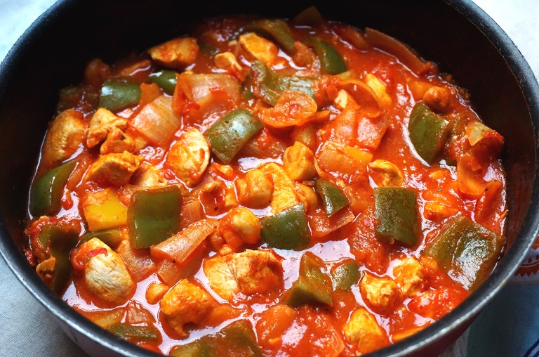

Chicken Tava Recipe

Description
A simple and delicious Turkish dish that is really easy to make!
If you love tomato sauces in general - I go through
phases of pretty much living on tomato sauces at
times, and let's face it, many others do too! They
are just so easy, inexpensive, healthy and delicious -
chicken tava is a great way to turn a classic staple meal into something
a little more exciting. Or simply add a bit of variety
in your day to day meals.
Ingredients
- chicken breast
- two onions
- bell peppers
- button mushrooms
- garlic cloves
- chopped tomatoes
- Butter
- tomato paste
Steps
- Roughly chop all the vegetables,
finely chop the garlic and dice the chicken breast
- Pan fry the onions in a bit of olive oil on low/medium
heat. As the onion start to soften up, add the mushrooms
and garlic and carry on frying for a couple of minutes.
Add the chicken and cook enough to seal the outer layer.
- Add the tin of tomato, 200ml water (basically half of
the empty tin), the harissa paste, tomato paste,
butter, salt, black pepper and let it simmer,
stirring occasionally.
- As the tomatoes start to break down, add the bell
pepper (and a little bit of extra water if it's
looking too 'dry'). Carry on cooking until the tomatoes
have broken down, the bell pepper chunks have softened
up and the excess water has evaporated.
See other recipes